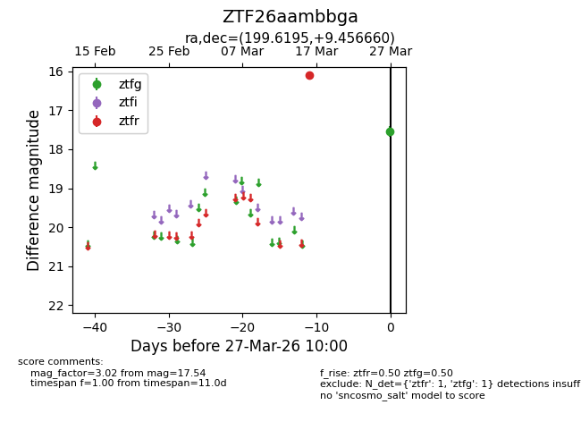
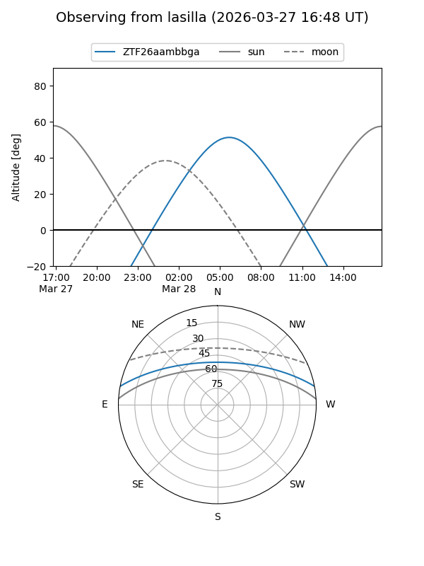
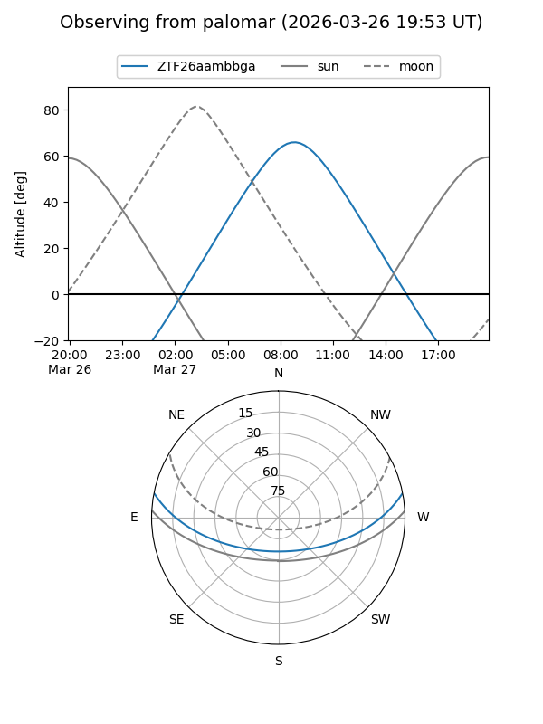

ZTF26aambbga
Target ZTF26aambbga at 2026-03-27 10:03
Aliases and brokers:
FINK: link
Lasair: link
ALeRCE: link
alt names
ZTF26aambbga (ztf,fink_ztf)
Coordinates:
equatorial (ra, dec) = 199.6195,+9.45666
equatorial (HMS+DMS) = 13:18:28.68,+09:27:23.97
galactic (l, b) = (324.0624,+71.21061)
Flags:
Photometry:
last ztfg=17.54, ztfr=16.09
1 ztfg, 1 ztfr detections
Lightcurve

Visibility


Additional plots